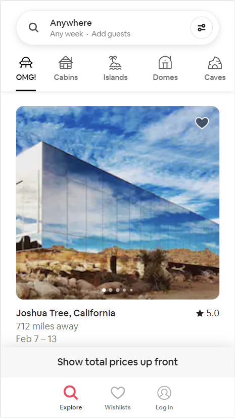
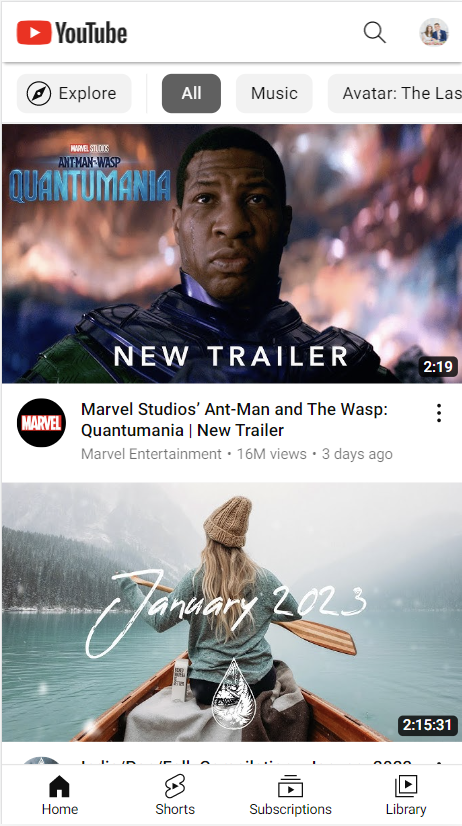

Fitt's Law
Airbnb
airbnb.com Fitt's Law deals with how quickly a person can make a selection. The easier for a user to access to most wanted feature, the better. Airbnb does a great job at bringing their users to the feature they want to showcase most - the booking feature. On the screenshot above you can see that the bar at the very top of the screen is what the user would click/tap to search "anywhere", "any week", and "add guests".
Hick's Law
YouTube
youtube.com Similarly to Fitt's law, Hick's law deals with how quickly/slowly a user makes a decision. However, instead of focusing on making the desired features more accessible, Hick's law focuses on helping user's to make a decision at all. Youtube does a great job at this. The video platform has a seemingly unending supply of video content, but they make it easy to get started by providing featured videos as the home page.
White Space
Flywheel
getflywheel.comWhite space is the use, or should I say lack of use, of content to provide a sense of minimalism. I've learned that this is a great way to keep a sight looking clean and sleak. However, another great point I've learned is that it can be used to help the user see desired text/images. Flywheel, a wordpress website developing site, utilizes this skill when showing pricepoints for their plans. With whitespace, they are able to make the monthly prices (assumably competitive) pop out!